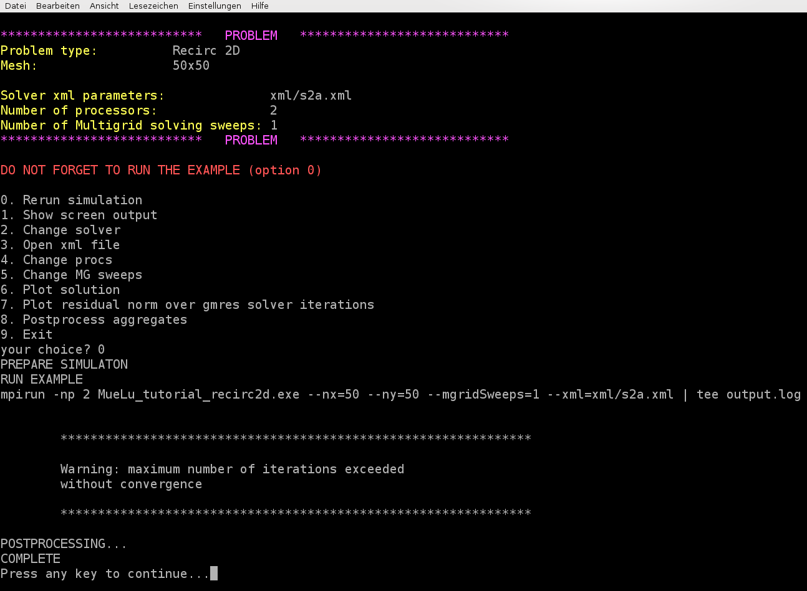

Multigrid for non-symmetric problems
Test example
The Recirc2D example uses a matrix corresponding to the finite-difference discretization of the problem
on the unit square, with \(\varepsilon=1e-5\) and homogeneous Dirichlet boundary conditions. It is \(v_x=4x(x-1)(1-2y)\) and \(v_y=-4y(y-1)(1-2x)\). The right hand side vector \(f\) is chosen to be the constant vector 1. Due to the convective term the resulting linear system is non-symmetric and therefore more challenging for the iterative solver. The multigrid algorithm has to be adapted to the non-symmetry to obtain good convergence behavior.
User interface
For this tutorial again we can use the easy-to-use user interface. Run the hands-on.py script in your terminal and choose option 2 for the Recirc 2D example on a \(50\times 50\) mesh. Note that the default values from the file ../../../test/tutorial/s2a.xml do not lead to a convergent multigrid preconditioner.
{kind=link}

The convergence of the used unsmoothed transfer operators (multigrid algorithm = unsmoothed) is not optimal. In case of symmetric problems one can reduce the number of iterations using smoothed aggregation algebraic multigrid methods. In context of non-symmetric problems, especially when arising from problems with (highly) convective phenomena, one should use a Petrov-Galerkin approach for smoothing the prolongation and restriction operators more carefully.
In MueLu one can choose a Petrov-Galerkin approach for the transfer operators by setting multigrid algorithm = pg. Furthermore, one has to state that the system is non-symmetric by setting problem: symmetric = false. In addition, you have to set transpose: use implicit = false to make sure that the prolongation and restriction are built separately. This is highly important for non-symmetric problems since \(R=P^T\) is not a good choice for non-symmetric problems (see, e.g., [1] [2]).
The role of the transpose: use implicit and the problem: symmetric parameters are the following:
Description
transpose: use implicit Use \(R=P^T\) for the restriction operator and do not explicitly build the operator \(R\).
This can save a lot of memory and might be very performant when building the multigrid Galerkin product. However, for non-symmetric problems this is not working and has to be turned off. * problem: symmetric If true, use \(R=P^T\) as restriction operator. Depending on the transpose: use implicit parameter the restriction operator is explicitly built. If false a Petrov-Galerkin approach as described in [1] is used to build the restriction operator separately. Note, that for the Galerkin approach it is necessary to build the restriction operator explicitly and store it.
Note
One can also use unsmoothed transfer operators (multigrid algorithm = unsmoothed) for non-symmetric problems. These might not give optimal results with respect to the iteration count, but they can be used with transpose: use implicit = true for non-symmetric problems, too, without disturbing the convergence. This way one can save a significant amount of memory compared to the smoothed aggregation method with Petrov-Galerkin for non-symmetric problems.
Exercise 1
Choose the parameters from the n1_easy.xml file. If you run the example you might find that the GMRES method did not converge within 50 iterations. Use multigrid algorithm = pg and compare the results with multigrid algorithm = unsmoothed. Do not forget to set the other parameters correctly for Petrov-Galerkin methods as described before. What is the difference in the number of GMRES iterations? What is changing in the multigrid setup?
Exercise 2
For slightly non-symmetric problems the sa method often performs satisfactorily. Change the verbosity to high (verbosity = high) and compare the results of the multigrid algorithm = pg option with the multigrid algorithm = sa option. Check the role of the transpose: use implicit parameter. What is changed by the problem: symmetric parameter? Try different values between 0 and 1.5 for the damping parameter within the smoothed aggregation method (i.e., try values 0.0, 0.5, 1.0, 1.33 and 1.5 for sa: damping factor). What do you observe?